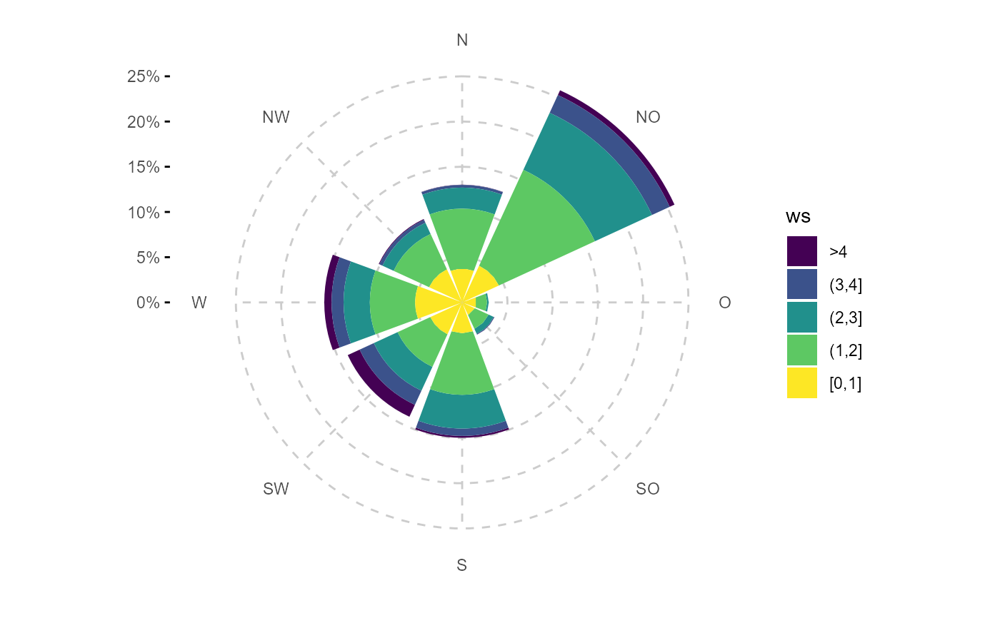
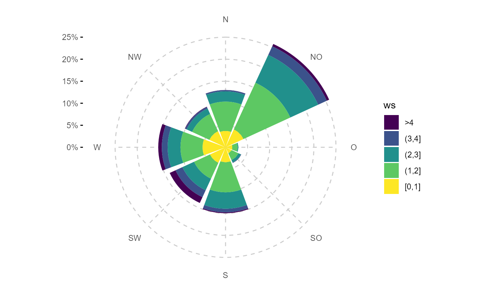

this themes are used in the respective gg wrapper to apply some basic theming.
Usage
theme_rop_traj(base = ggplot2::theme_minimal())
theme_rop_polarplot(base = ggplot2::theme_minimal())
theme_rop_radar(base = ggplot2::theme_minimal())
theme_rop_windrose(base = ggplot2::theme_minimal())
theme_rop_diuarnal(base = ggplot2::theme_classic())Arguments
- base
a ggplot2 theme. see
ggplot2::theme()
Examples
library(ggplot2)
fn <- rOstluft.data::f("Zch_Stampfenbachstrasse_2010-2014.csv")
data <- rOstluft::read_airmo_csv(fn)
data <- rOstluft::rolf_to_openair(data)
data <- dplyr::mutate(data, year = lubridate::year(date))
data_summarized <- summary_wind(data, ws, wd, ws,
ws_cutfun = cut_ws.fun(ws_max = 4, reverse = TRUE)
)
p <- ggplot(data_summarized, aes(x = wd, y = freq, fill = ws)) +
geom_bar(stat = "identity") +
coord_polar2(start = - 22.5 / 180 * pi ) +
scale_y_continuous(
limits = c(0, NA),
expand = c(0,0, 0, 0),
labels = scales::percent
) +
scale_fill_viridis_d()
# default appearance
p
 # with rOstluft theming for a windrose
p + theme_rop_windrose()

# prefer bw as base and a bigger font for a presentation
p + theme_rop_windrose(
theme_bw(base_size = 14)
)
# with rOstluft theming for a windrose
p + theme_rop_windrose()

# prefer bw as base and a bigger font for a presentation
p + theme_rop_windrose(
theme_bw(base_size = 14)
)